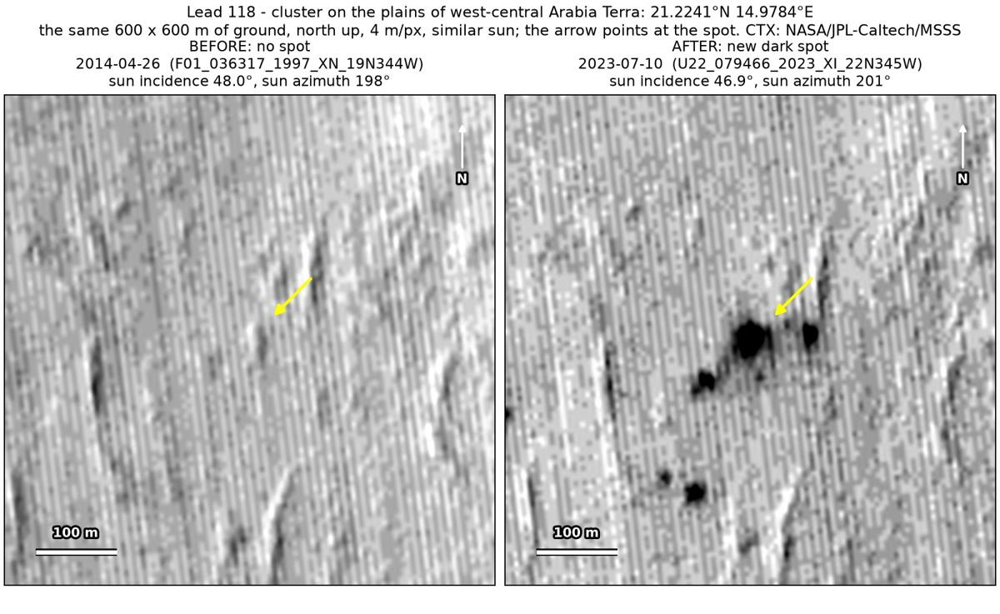
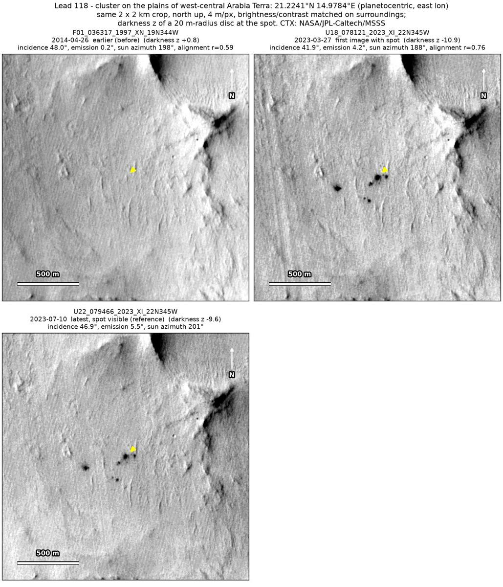
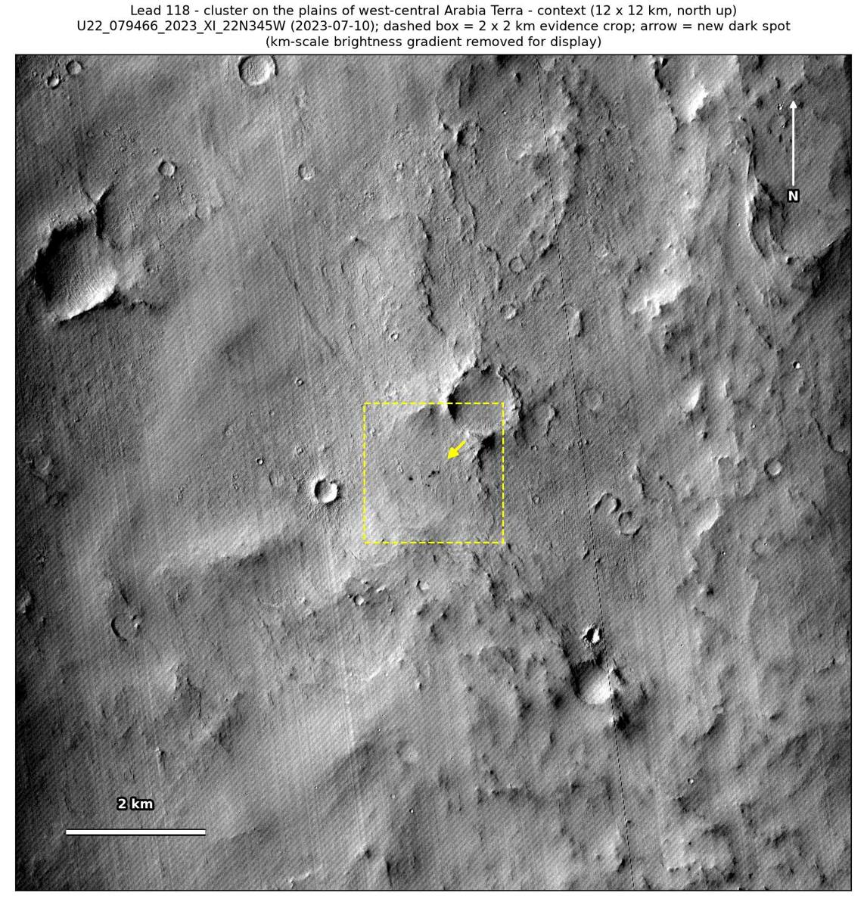

Professor of Mathematics
Paata Ivanisvili
Department of Mathematics, University of California, Irvine

← Possible new impact sites on Mars
Candidate 118: Cluster of dark spots on the plains of west-central Arabia Terra
Strong · roughly 85%

What changed. A cluster of at least six dark spots within about 350 m, the largest about 40 m across, appeared on the plains of west-central Arabia Terra between April 2014 and March 2023, in two CTX images from two orbits.
Why it may be a new impact. The only earlier image, of April 2014, taken under almost the same sun as the July 2023 image, shows the small ridges around the cluster sharply but no spots. The aligned before-and-after difference is deepest at the largest spot, with no other new dark mark and no tracks in the surrounding 5 × 5 km, and a cluster of separate round dark spots is not a dust-devil pattern but fits a small new impact.
- Location
- 21.224° N, 14.978° E
- Absent
- 26 April 2014
- Present
- 27 March 2023 and 10 July 2023
- Size
- Cluster of at least six dark spots within about 350 m, the largest about 40 m across (40 × 44 m in the July 2023 image)
- Confidence
- Strong candidate; roughly 85% that it is a new impact.
- Caveat
- Only one earlier image covers the site, and the dark feature nearby used as a check is dark only in that image, not in the 2023 ones, so it may be a shading detail and the check is weaker than usual. It lies outside every footprint of the high-resolution HiRISE camera; the nearest ends 41 km away. Like every candidate here, it is unconfirmed: see the caveat.

